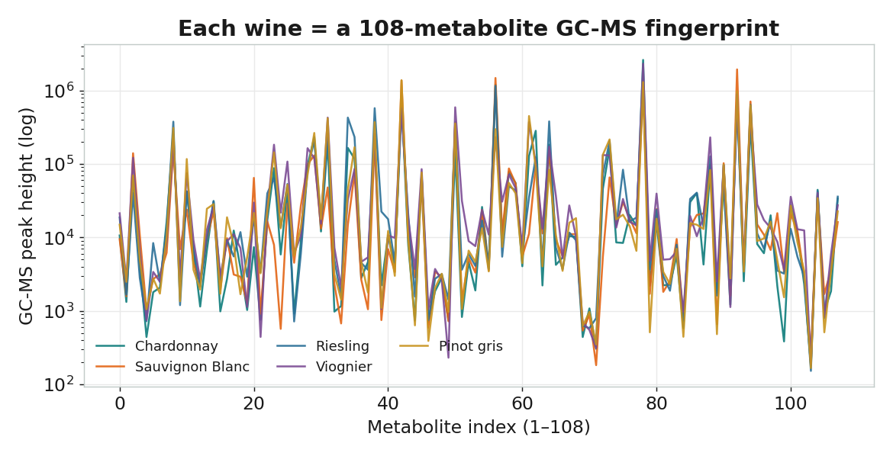
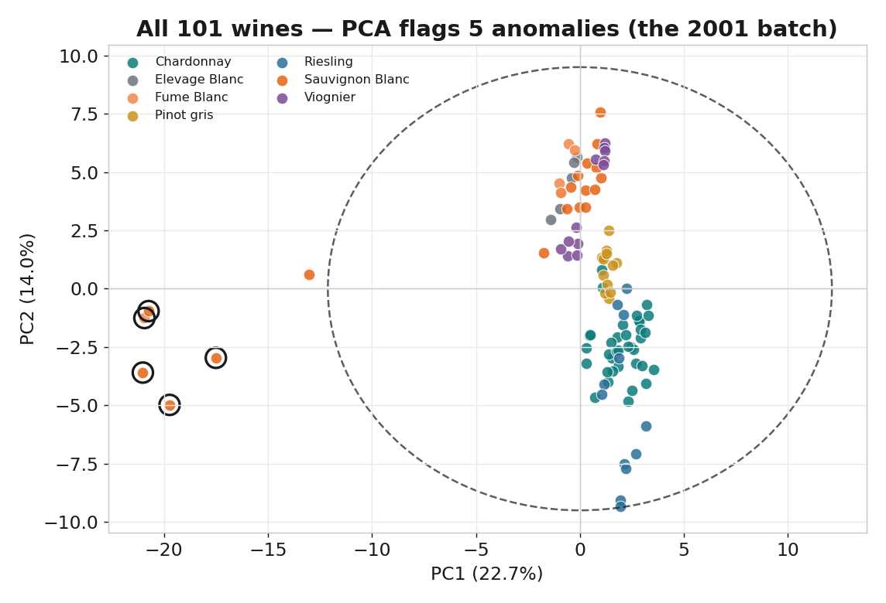
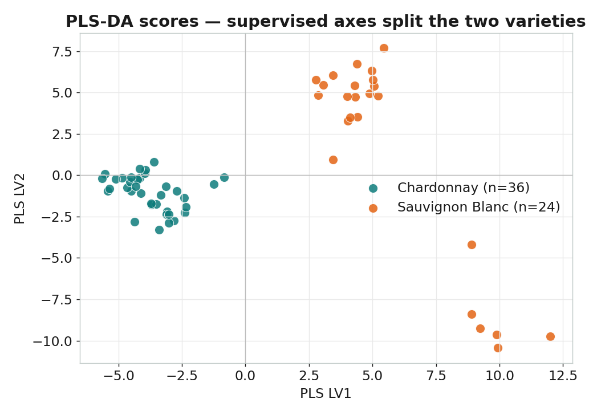
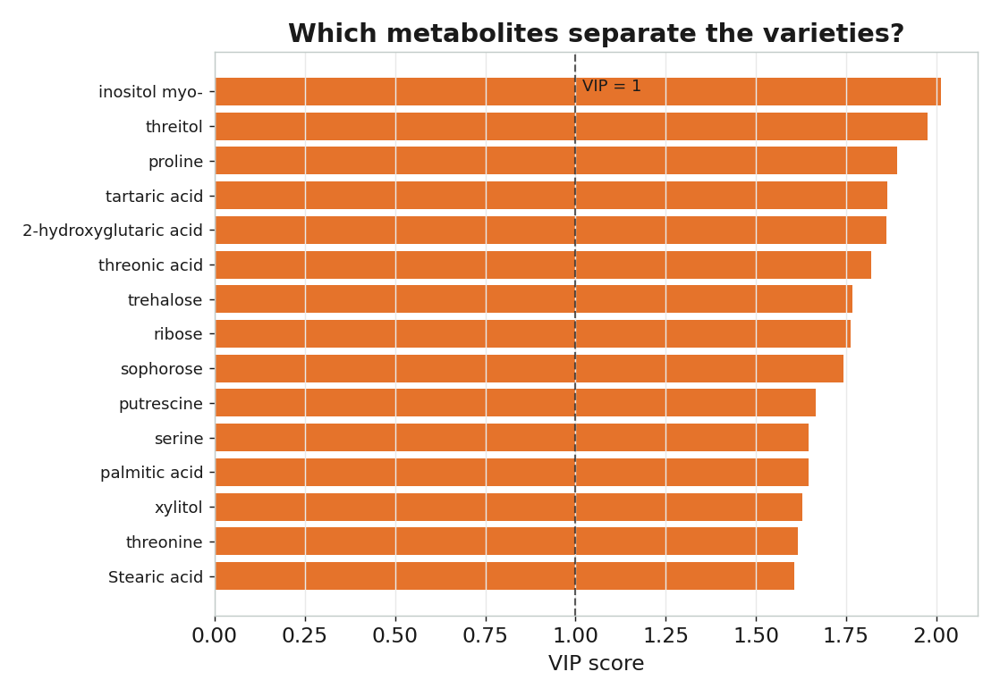

最靈敏的「分子之眼」
質譜（Mass Spectrometry, MS）依分子的質荷比（m/z）偵測化合物，靈敏度可達 ppb 等級。 搭配氣相或液相層析（GC-MS / LC-MS），一次分析就能在一個樣本裡，量出上百種代謝物——形成獨一無二的化學指紋。
靈敏
偵測極微量成分，適合摻偽、汙染、產地差異的鑑別。非標的指紋
不預設找誰，把樣本的整體代謝輪廓一次拍下來。但是…
一張指紋是上百個彼此相關的數字，必須靠化學計量學才能解讀。酒樣本 ──▶ GC-MS 分析 ──▶ 每個化合物在特定 m/z 被偵測 ──▶ 整理成「樣本 × 代謝物」資料矩陣
白酒 GC-MS 代謝體（公開資料）
NIH Metabolomics Workbench 的 White Wine Study（ST000006）：101 支白酒， 以 GC-TOF 質譜量得 108 種代謝物的峰高，並標註葡萄品種與產地。屬公開資料（CC0）。

| 品種 variety | 樣本數 | 本課用途 |
|---|---|---|
| Chardonnay | 36 | PLS-DA 類別 A |
| Sauvignon Blanc（含 Fume Blanc） | 24 | PLS-DA 類別 B |
| Riesling / Pinot gris / Viognier | 各 12 | PCA 探索 |
| Elevage Blanc（混調） | 5 | PCA 探索 |
前處理：log + autoscale
代謝物峰高跨了約 5 個數量級，大訊號會淹沒小訊號。先取 對數 壓縮範圍，再 autoscale（逐欄標準化）讓每種代謝物公平貢獻——這是質譜代謝體學的標準前處理，作用等同近紅外光譜裡的 SNV。

PCA：把上百種代謝物壓成幾個方向
主成分分析（Principal Component Analysis）在資料最分散的方向上建立新座標軸： PC1 是變異最大的方向、PC2 與它垂直且次大……少數幾個主成分，就能描述最重要的結構。
要保留幾個主成分？

先抓異常：PCA 自動找出 2001 批次

清理後：品種自己浮現

負荷量回連化學

PLS-DA：用指紋「鑑別」葡萄品種
偏最小二乘判別分析（PLS Discriminant Analysis）給模型看過品種標籤，找出的潛在變量 同時解釋指紋的變異、又對齊類別分界。這就是它和 PCA 的關鍵差異：PCA 只看 X，PLS-DA 一手抓 X、一手抓類別。
監督式分數：LV1 直接分開兩品種

該用幾個潛在變量？用交叉驗證

成果：交叉驗證下的混淆矩陣

準確率 100%
5 折交叉驗證，60 支酒全部分類正確。5 個 LV
但 1 個 LV 已達 97%——複雜度夠用就好。哪些代謝物在做決定？

Python 程式（scikit-learn）
整套分析用 numpy / pandas / scikit-learn 完成，可重現。完整檔案見 python/ 目錄。
前處理 — log + autoscale（python/ms_utils.py）
def preprocess(X):
"""log10 壓縮動態範圍 + autoscale 逐代謝物標準化（質譜代謝體標準前處理）。"""
Xlog = np.log10(X + 1.0)
mu = Xlog.mean(axis=0, keepdims=True)
sd = Xlog.std(axis=0, ddof=1, keepdims=True); sd[sd == 0] = 1.0
return (Xlog - mu) / sdPCA — 主成分分析 + Hotelling T² 異常偵測（python/02_pca.py）
from sklearn.decomposition import PCA
Xp = preprocess(X) # log + autoscale
pca = PCA(n_components=8).fit(Xp)
T = pca.transform(Xp) # 樣本在新軸上的位置（分數）
# Hotelling T^2（前 2 個 PC）找出落在 99% 信賴範圍外的 5 支酒 -> 2001 批次
t2 = (T[:, :2] ** 2 / pca.explained_variance_[:2]).sum(1)
# 去掉異常後重算，品種自動分群；PC1 ≈ 22%PLS-DA — 分類 Chardonnay vs Sauvignon Blanc（python/03_plsda.py）
from sklearn.cross_decomposition import PLSRegression
from sklearn.model_selection import StratifiedKFold, cross_val_predict
y = (variety_group == "Chardonnay").astype(int) # 類別編碼 0/1
# log + autoscale 放進 pipeline，確保前處理在「每一折」內進行（誠實驗證）
yhat = cross_val_predict(make_pipe(n_lv=5), X_raw, y.astype(float),
cv=StratifiedKFold(5, shuffle=True, random_state=42))
acc = ((yhat >= 0.5).astype(int) == y).mean() # 5 折 CV 準確率 = 100%▶ 如何在本機重跑
pip install numpy pandas scipy scikit-learn matplotlib
cd python
python 01_explore.py # 抓資料 + 指紋 / 前處理圖
python 02_pca.py # 陡坡 / 分數（含異常）/ 負荷量
python 03_plsda.py # 監督分數 / 選 LV / 混淆矩陣 / VIP
# 所有圖輸出到 python/figures/用 Orange Data Mining 親手拉一遍
課堂可用 Orange 的拖拉式 widget，不寫一行程式就重現上面的 PCA 與品種鑑別。
開啟 orange/wine_ms_workflow.ows，把 File 指向 data/wine_orange.tab 即可。
┌─ Data Table （檢視原始峰高）
│
File ────┼─ PCA ──Transformed Data──▶ Scatter Plot ← PCA 分支（Color = variety）
(wine_ │
orange) └─ Select Rows ──▶ Logistic Regression ──▶ Test & Score ──▶ Confusion Matrix
（Chardonnay vs Sauvignon Blanc，PLS-DA 的 Orange 對應）關於 PLS-DA：Orange 內建的 PLS widget 只做數值回歸，故分類分支改用 Logistic Regression——同樣是監督式線性鑑別，能直接輸出混淆矩陣，教學概念與 PLS-DA 完全相通。
| 對應概念 | Python 圖 | Orange widget |
|---|---|---|
| 代謝指紋（原始） | ms01 | File → Data Table |
| 主成分數量 | ms03 | PCA 視窗內變異曲線 |
| 分數圖（依品種上色） | ms04 | PCA → Scatter Plot（Color=variety） |
| 異常偵測（2001 批次） | ms04_full | Scatter Plot 左側離群點（hover 看 label） |
| 分類 + 混淆矩陣 | ms08 | Logistic Regression → Test&Score → Confusion Matrix |
| 哪些代謝物在分類 | ms09 VIP | Rank widget（information gain / ANOVA） |
PCA 與 PLS-DA，一張表看懂
| 面向 | PCA | PLS-DA |
|---|---|---|
| 學習方式 | 非監督（只看 X） | 監督（用 X 與類別 y） |
| 目的 | 探索結構、分群、找異常 | 分類鑑別（如品種、產地） |
| 找方向的準則 | 最大化 X 的變異 | 最大化 X 與類別的共變異 |
| 本課結果 | 自動分群 + 抓出 2001 異常批次 | 兩品種 5 折 CV 準確率 100% |
| 關鍵圖 | 陡坡圖、分數圖、負荷量 | CV 曲線、混淆矩陣、VIP |
| 何時用 | 先用它「看」資料 | 確定要鑑別時用它建模 |